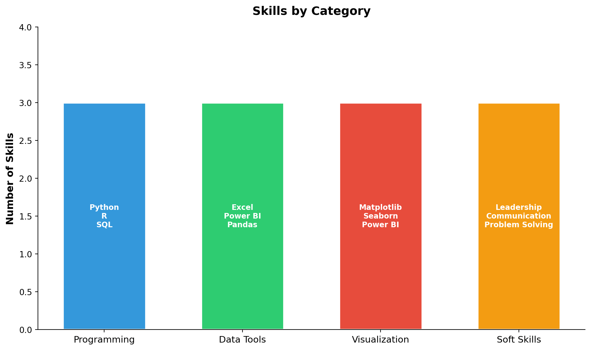

| Degree | Institution | Location | Period | Status |
|---|---|---|---|---|
| MS Business Analytics | Boston University | Boston, MA, USA | 2024 - 2026 | In Progress |
| BTech | SRM University | Chennai, India | 2020 - 2024 | Completed |
Curriculum Vitae
📄 My CV
Download my complete curriculum vitae to learn more about my professional background, education, and experience.
TipDownload CV
👤 Professional Summary
I am a dedicated MS Business Analytics candidate at Boston University with a strong foundation in technology and data analysis. With hands-on experience in operations management and human resources, I bring a unique blend of technical skills and business acumen to drive data-informed decision-making.
My expertise spans across:
- Data Analysis & Visualization using Python, R, and Power BI
- Business Intelligence and dashboard development
- Operations Management with proven leadership experience
- Cross-functional Communication in multilingual environments
🎓 Education
💼 Professional Experience
Operations Head
G-TEC Computer Education | 2023 - 2025
- Led operational strategies to improve organizational efficiency
- Managed cross-functional teams and coordinated daily activities
- Implemented process improvements resulting in enhanced productivity
- Developed and maintained key performance indicators (KPIs)
HR Intern
USDC | July - August 2023
- Assisted in recruitment and onboarding processes
- Supported HR administrative functions and documentation
- Participated in employee engagement initiatives
- Gained exposure to HR analytics and reporting
🛠️ Technical Skills

🌍 Languages
| Language | Proficiency |
|---|---|
| English | Fluent |
| Malayalam | Fluent |
| Hindi | Advanced |
| Tamil | Intermediate |
| Arabic | Elementary |
| Japanese | Beginner |
🏆 Key Competencies
Technical
- Data Analysis & Mining
- Statistical Modeling
- Database Management
- Business Intelligence
- Web Development
Professional
- Team Leadership
- Project Management
- Strategic Planning
- Problem Solving
- Cross-cultural Communication